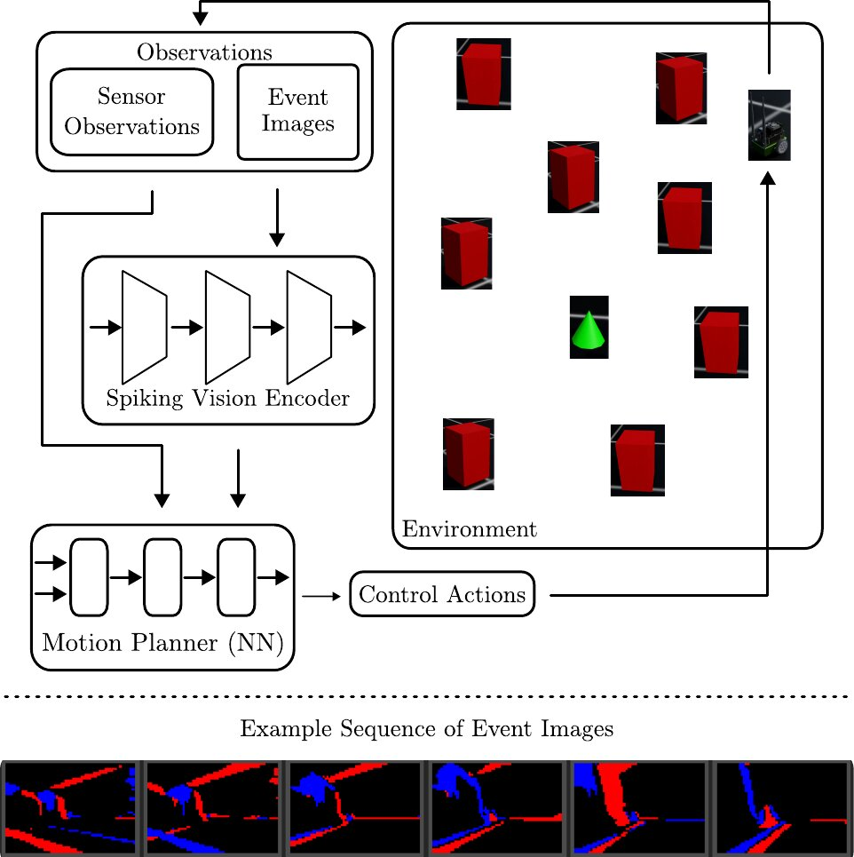
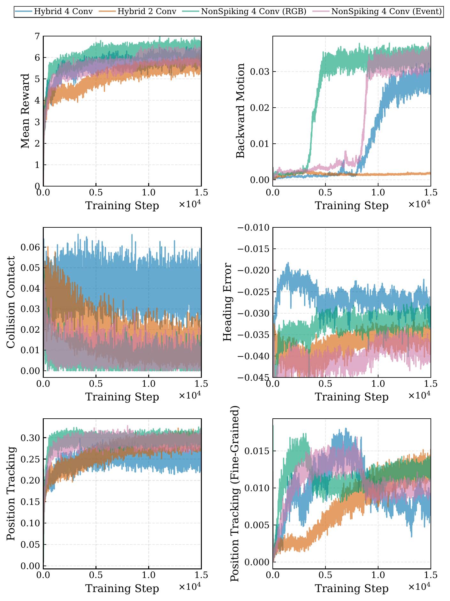
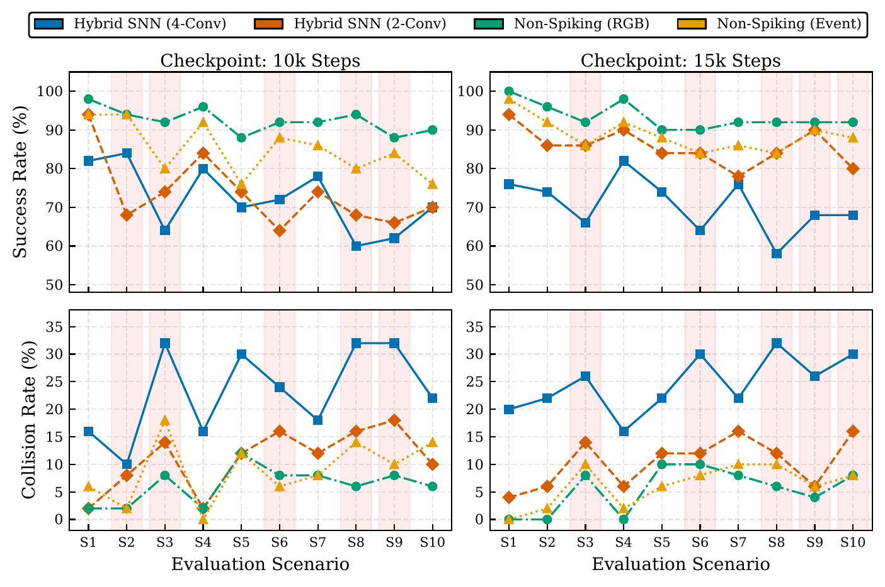
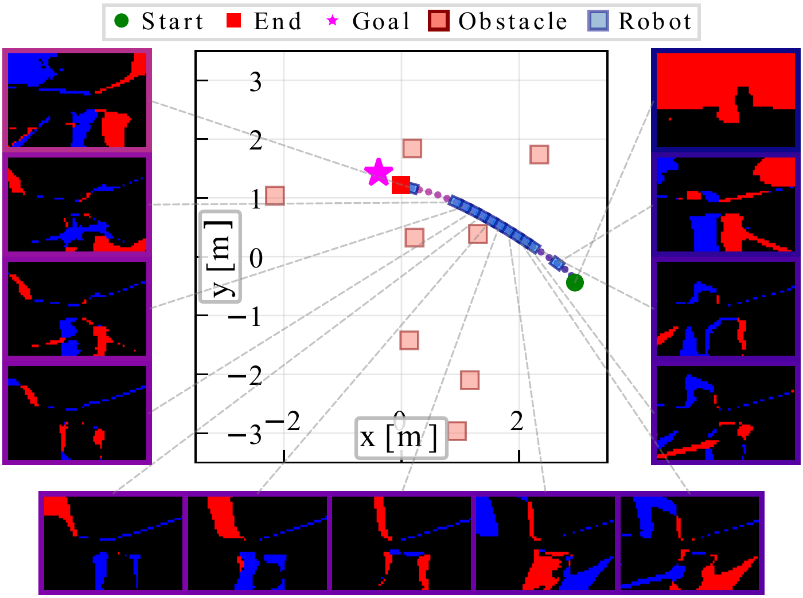

A Hybrid Spiking Neural Network for Event-Based Continuous Robot Control
2026 IEEE 39th International System-on-Chip Conference (SOCC 2026)

Summary
Event cameras report only the pixels that change, and spiking neural networks (SNNs) compute only when spikes arrive, so both are naturally sparse and energy-efficient. Whether the two together can drive a robot in closed loop had not been tested. We built a hybrid policy for a JetBot that has to reach a goal while avoiding obstacles. An SNN reads the event stream, and an ordinary neural network turns what it sees into motor commands.
Method
Event camera. Isaac Lab has no native event-camera simulation, so we generate events from consecutive RGB frames. Each pixel's change in log brightness is thresholded into positive and negative events, which gives a two-channel binary image.
Spiking vision encoder. Convolutional layers with Leaky Integrate-and-Fire (LIF) neurons, followed by a fully connected projection. The convolutions capture spatial structure, and the membrane dynamics integrate information over time. The binary event frames feed straight in, because they are already spikes. The output is a binary latent vector.
Motion planning module. A three-layer network with ELU activations. It takes the spiking latent together with low-dimensional state (pose, velocity, goal) and outputs continuous wheel commands. Images suit spikes and small state vectors suit a normal network, which is why the policy is split this way.
The whole policy is trained end-to-end with PPO in Isaac Lab. At inference, membrane potentials carry over from one step to the next, so the encoder streams naturally without recomputing the past. This property is a good fit for neuromorphic hardware.
Results
We compared four policies: Hybrid SNN with 4 or 2 convolutional layers, and two non-spiking baselines, one on RGB images and one on event images. All four converge stably. They all learn to avoid obstacles, with collision contact around 0.01–0.04, and they all learn to face the goal.

Across ten unseen scenarios of 100 episodes each, the RGB baseline is the strongest (90–100% success). The Hybrid SNN (2-Conv) improves with training to 78–94% while keeping collision rates comparable to the non-spiking models. Given its smaller size and spike-based computation, this is an attractive trade-off for power-constrained deployment.

The example below is an episode where the non-spiking model fails on the same layout. The hybrid model reaches the goal on a smooth path, without sharp turns or oscillation.
